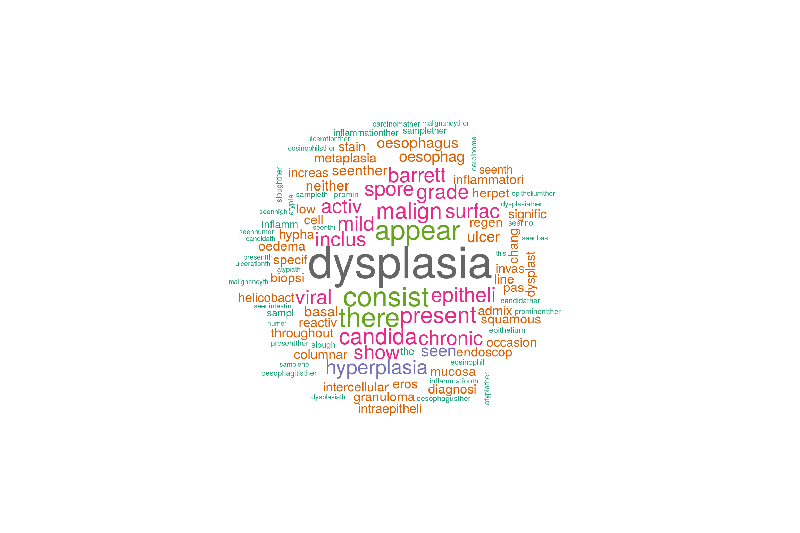

Text extraction is a fundamental part of data in gastroenterology. Most data we deal with is either unstructured or semi-structured text. Semi-structured text means that there is some standardised organisation to the text but the user has basically got free reign to fill in free text wherever there is a heading.
So how do we deal with this? R has many possible solutions but we have to devise one over-arching solution to deal with all eventualities:
The main situations to deal with are as follows:
1. Extracting diagnoses eg. ‘Dysplasia is seen’
2. Excluding text where the diagnosis is normal but is still mentioned eg. ‘There is no dysplasia…’
3. Dealing with text where there are subclauses ‘There is no obvious dysplasia, but there may be some at the sample margin’
This is tricky. The methodology I use is as follows:
1. Order the text into sentences with defined borders (eg Ensure that at the end of sentences there is a newline or a full stop).
2. Extract logical sections of the text into their own columns
3. Clean the text (eg get rid of unnecessary characters).
4. Negation extraction.
5. Extraction of terms of interest into their own column.
Of the steps above, point two is the most difficult to make generic between reports especially from different hospitals, and point 3 is the most difficult for all units. But where there’s a will….
This page will describe the use of gsub as a way of ordering and cleaning the text:
Lets create a report, lets say from pathology
pathRep<-c("CLINICAL DETAILSOesophageal stricture.MACROSCOPICAL DESCRIPTIONNature of specimen as stated on request form = Lower oesophagus x5.Nature of specimen not stated on pot.Three pieces of tissue, the largest measuring 1 x 2 x 2 mm and the smallest 1x 1 x 1 mm, received on a pointed cellulose strip. HISTOLOGYThe appearances are suggestive of Barretts oesophagus.Neither dysplasia nor malignancy is seen. DIAGNOSISOesophagus, biopsies_ - Ulceration and chronic active inflammation.- Squamo-columnar mucosa with intestinal metaplasia.- Suggestive of Barretts oesophagus.- No evidence of dysplasia or malignancy.")At the moment it is fairly unstructured so lets create come borders. The structure looks as through each section starts with a header in capitals and ends with a full stop so lets replace each full stop with a newline first to see things more clearly:
pathRep<-gsub("\\.","\n",pathRep)
pathRep## [1] "CLINICAL DETAILSOesophageal stricture\nMACROSCOPICAL DESCRIPTIONNature of specimen as stated on request form = Lower oesophagus x5\nNature of specimen not stated on pot\nThree pieces of tissue, the largest measuring 1 x 2 x 2 mm and the smallest 1x 1 x 1 mm, received on a pointed cellulose strip\n HISTOLOGYThe appearances are suggestive of Barretts oesophagus\nNeither dysplasia nor malignancy is seen\n DIAGNOSISOesophagus, biopsies_ - Ulceration and chronic active inflammation\n- Squamo-columnar mucosa with intestinal metaplasia\n- Suggestive of Barretts oesophagus\n- No evidence of dysplasia or malignancy\n"So gsub is a find and replace funciton in R. At least now we can see what it looks like more clearly. So lets clean it up a little more. We want to extract as much as possible here so firstly lets extract sections according to their logical separation. It looks as though the headers are in capitals so lets seperate those into their own columns: We are going to use the library stringr to do this. THis allows us to use regular expressions which are flexible ways of matching text expression patterns. More information is here http://www.regular-expressions.info. Because we have used a newline we can just define the start border and it will match everything up to the newline
#Lets start again:
pathRep<-c("CLINICAL DETAILSOesophageal stricture.MACROSCOPICAL DESCRIPTIONNature of specimen as stated on request form = Lower oesophagus x5.Nature of specimen not stated on pot.Three pieces of tissue, the largest measuring 1 x 2 x 2 mm and the smallest 1x 1 x 1 mm, received on a pointed cellulose strip. HISTOLOGYThe appearances are suggestive of Barretts oesophagus.Neither dysplasia nor malignancy is seen. DIAGNOSISOesophagus, biopsies_ - Ulceration and chronic active inflammation.- Squamo-columnar mucosa with intestinal metaplasia.- Suggestive of Barretts oesophagus.- No evidence of dysplasia or malignancy.")
library(stringr)
ClinDet<-str_extract(pathRep,"CLINICAL DETAILS.*MACROSCOPICAL DESCRIPTION")
MacDet<-str_extract(pathRep,"MACROSCOPICAL DESCRIPTION.*HISTOLOGY")
HistolDet<-str_extract(pathRep,"HISTOLOGY.*DIAGNOSIS")
DiagDet<-str_extract(pathRep,"DIAGNOSIS.*")
myPath<-data.frame(ClinDet,MacDet,HistolDet,DiagDet,stringsAsFactors=F)
myPath## ClinDet
## 1 CLINICAL DETAILSOesophageal stricture.MACROSCOPICAL DESCRIPTION
## MacDet
## 1 MACROSCOPICAL DESCRIPTIONNature of specimen as stated on request form = Lower oesophagus x5.Nature of specimen not stated on pot.Three pieces of tissue, the largest measuring 1 x 2 x 2 mm and the smallest 1x 1 x 1 mm, received on a pointed cellulose strip. HISTOLOGY
## HistolDet
## 1 HISTOLOGYThe appearances are suggestive of Barretts oesophagus.Neither dysplasia nor malignancy is seen. DIAGNOSIS
## DiagDet
## 1 DIAGNOSISOesophagus, biopsies_ - Ulceration and chronic active inflammation.- Squamo-columnar mucosa with intestinal metaplasia.- Suggestive of Barretts oesophagus.- No evidence of dysplasia or malignancy.OK that’s quite useful. What if we want to do more? Now I want to be able to calculate the size of each of the biopsy specimens, or at least get the size of the largest biopsy taken here. Also I want to find out how many biopsies are taken as a number. Again we can use gsub and stringr
For the size of the biopsy specimen we can use the following:
#Lets extract just the largest biopsy
myPath$BxSize<-str_extract(myPath$MacDet, "the largest.*?mm")
myPath$BxSize## [1] "the largest measuring 1 x 2 x 2 mm"#Lets get rid of some text we don't need
myPath$BxSize<-gsub("the largest measuring ","",myPath$BxSize)
myPath$BxSize<-gsub("mm","",myPath$BxSize)
myPath$BxSize<-gsub("less than","",myPath$BxSize)
myPath$BxSize## [1] "1 x 2 x 2 "#Now lets use the stringr library to match the biopsy size
myPath$BxSize<-as.numeric(str_match(myPath$BxSize, "([0-9]+).*?([0-9])+.*?([0-9])")[, 2])*as.numeric(str_match(myPath$BxSize, "([0-9]+).*?([0-9])+.*?([0-9])")[, 3])*as.numeric(str_match(myPath$BxSize, "([0-9]+).*?([0-9])+.*?([0-9])")[, 4])
myPath$BxSize## [1] 4To find out how many biopsies we have taken we’ll have to change some text into numbers:
myPath$MacDet<-gsub("Three","3",myPath$MacDet)
#But remember there may be more than one pot of biopsies so we have to get all of them:
myPath$NumbOfBx<-str_extract_all(myPath$MacDet, "([A-Za-z]*|[0-9]) piece.*?(([0-9]).*?x.*?([0-9]).*?x.*?([0-9])).*?([a-z]\\.)")
myPath$NumbOfBx<-sapply(myPath$NumbOfBx, function(myPath) sum(as.numeric(unlist(str_extract_all(myPath, "^\\d+")))))
myPath$NumbOfBxs<-unlist(myPath$NumbOfBx)
myPath$NumbOfBx<-as.numeric(str_extract(myPath$NumbOfBx,"^.*?\\d"))So 3 biopsies were taken in all
the resulting dataset looks like this:
knitr::kable(myPath)| ClinDet | MacDet | HistolDet | DiagDet | BxSize | NumbOfBx | NumbOfBxs |
|---|---|---|---|---|---|---|
| CLINICAL DETAILSOesophageal stricture.MACROSCOPICAL DESCRIPTION | MACROSCOPICAL DESCRIPTIONNature of specimen as stated on request form = Lower oesophagus x5.Nature of specimen not stated on pot.3 pieces of tissue, the largest measuring 1 x 2 x 2 mm and the smallest 1x 1 x 1 mm, received on a pointed cellulose strip. HISTOLOGY | HISTOLOGYThe appearances are suggestive of Barretts oesophagus.Neither dysplasia nor malignancy is seen. DIAGNOSIS | DIAGNOSISOesophagus, biopsies_ - Ulceration and chronic active inflammation.- Squamo-columnar mucosa with intestinal metaplasia.- Suggestive of Barretts oesophagus.- No evidence of dysplasia or malignancy. | 4 | 3 | 3 |
So that’s pretty good. But now we want some more data. What about trying to extract a final diagnosis here. It’s tricky as in fact there are three diagnoses and one non-diagnosis (“No evidence of dysplasia or malignancy”).
Given we have extracted the diagnoses into the DiagDet column we can focus just on this one. The approach I take is firstly to exclude negative diagnoses. Having explored many of there reports I understand that they normally do not include subclauses so that the complexity of a sentence in a medical report is usually low. This is useful to know. Furthermore we can define patterns that isolate negative sentences. These are fairly universal patterns. It is the subject of ongoing work so I won’t tell you the patterns until they are published but for this example all we need to do is use the gsub again:
myPath$DiagDet<-gsub("No evidence.*","",myPath$DiagDet)So now what? We have word in there we don’t need and “Oesophagus, biopsies_” is not a diagnosis so how do we exclude that. At this point the best way is to define a corpus of diagnoses you are interested in and then look these up. This is a type of lookup list and is a very useful technique to focus on what you want to assess text for rather than endlessly cleaning the text and getting unpredicatble results:
The lookup lists can be done as follows:
#This will return any record that has the desired search term
toMatch<-c("[Bb]arrett","[Cc]andida","[Cc]oeliac","[Ee]osinophilic","[Pp]eptic")
myPath$DxFromCorpus <- unique (grep(paste(toMatch,collapse="|"), myPath$DiagDet, value=TRUE))
#This will extract the match
myPath$DxFromCorpus<-str_extract_all(myPath$DiagDet, "[Bb]arrett|[Cc]andida|[Cc]oeliac|[Ee]osinophilic|[Pp]eptic")Text is always messy, it being fully of punctuation, bad spelling, word variations such as plurals etc. This means that we need a way to clean the text that may be slightly different to the above. Natural kanguage processing is a vast area and contains methods to clean the text. One common starting point is the use of a document term matrix whcih does exactly as its title suggests. Below explains a methodology we can use.
We are going to use the pre-prepared dataset for this:
#To get the prepared endoscopy reports we are going to use the pre-prepared dataset here:
EndoHistoMerge<-source('EndoPathMerged_ExternalCode.R')
EndoHistoMerge<-as.data.frame(EndoHistoMerge)
names(EndoHistoMerge)<-gsub("value.","",names(EndoHistoMerge),fixed=T)Now we create the document term matrix using the packages listed in the code. We will run this on one of the free text columns:
library(dplyr)
library(directlabels)
library(splitstackshape)
library(tm)
library(SnowballC)
#theframe is the dataframe, y is the columnn of interest written in inverted commas and PropThreshold is the Proportion of reports Threshold for the graph
mywords<-head(EndoHistoMerge$Diagnoses,100)
jeopCorpus <- Corpus(VectorSource(EndoHistoMerge$Diagnoses))
#jeopCorpus <- tm_map(jeopCorpus, PlainTextDocument)
jeopCorpus <- tm_map(jeopCorpus, content_transformer(removeWords), stopwords("english"))
jeopCorpus <- tm_map(jeopCorpus, removePunctuation)
jeopCorpus <- tm_map(jeopCorpus, stripWhitespace)
jeopCorpus <- tm_map(jeopCorpus, removeWords, stopwords('english'))
jeopCorpus <- tm_map(jeopCorpus, stemDocument)
#wordcloud(jeopCorpus, max.words = 100, random.order = FALSE)
#Get the frequency table of terms being used over all the reports (ie counts x2 if mentioned twice in the report)
dtm <- TermDocumentMatrix(jeopCorpus)
m <- as.matrix(dtm)
v <- sort(rowSums(m),decreasing=TRUE)
d <- data.frame(word = names(v),freq=v)Inspecting each aspect of the dtm is interesting. The matrix shows the number of times each term is found in each report (each report is a column in the matrix)
# Just show a snapshot of the data
kable(m[1:10,1:10])| 1 | 2 | 3 | 4 | 5 | 6 | 7 | 8 | 9 | 10 | |
|---|---|---|---|---|---|---|---|---|---|---|
| admix | 1 | 1 | 1 | 1 | 1 | 1 | 1 | 1 | 1 | 0 |
| appear | 1 | 1 | 0 | 0 | 0 | 0 | 1 | 1 | 0 | 1 |
| atypianumer | 1 | 0 | 0 | 0 | 0 | 0 | 0 | 0 | 0 | 0 |
| basal | 1 | 1 | 0 | 0 | 1 | 0 | 0 | 0 | 0 | 0 |
| candida | 2 | 1 | 1 | 1 | 1 | 1 | 2 | 1 | 1 | 0 |
| carcinoma | 1 | 0 | 0 | 0 | 0 | 0 | 0 | 0 | 1 | 0 |
| cell | 1 | 1 | 0 | 0 | 0 | 0 | 0 | 0 | 0 | 0 |
| dysplasia | 2 | 0 | 2 | 0 | 2 | 0 | 1 | 1 | 3 | 3 |
| dysplast | 1 | 0 | 1 | 0 | 1 | 0 | 0 | 0 | 0 | 0 |
| epitheli | 1 | 1 | 0 | 0 | 0 | 0 | 0 | 0 | 1 | 1 |
We can also see the summary of all the terms
kable(head(d))| word | freq | |
|---|---|---|
| dysplasia | dysplasia | 24926 |
| consist | consist | 14038 |
| appear | appear | 14030 |
| there | there | 13732 |
| present | present | 10920 |
| malign | malign | 10842 |
There are many things that can be done with such a matrix and more will be written here at another point. Data visualisation is always fun so to end for now here is a pretty word cloud made out of the document term matrix.
library(wordcloud)
wordcloud(jeopCorpus, max.words = 100, random.order = FALSE,colors=brewer.pal(8, "Dark2"))